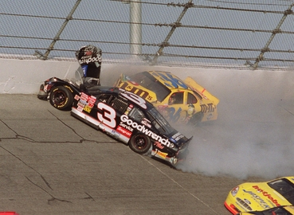
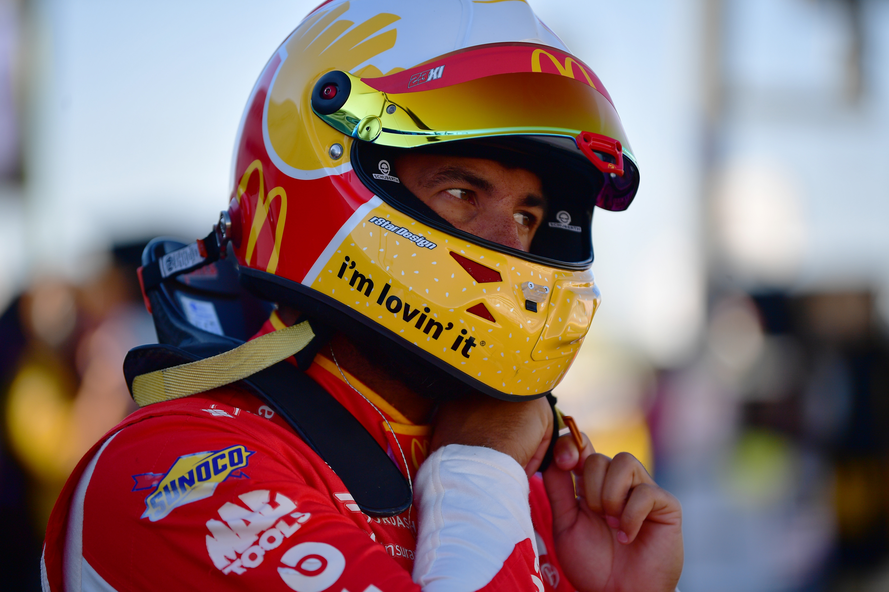

It Isn't Always Safe...
Many see NASCAR races as fun and adrenaline pumping. Because of that, we often overlook how dangerous stock car racing actually is. These cars are going at extremely fast speeds, as in up to 200 mph at certain tracks, particularly the superspeedways. And although NASCAR has frequently publicized the safety measures it mandates for its drivers, these features have only been adopted long after they were initially developed, and only in response to horrible injuries or fatality of a driver or crew member. In the early days of racing, the drivers didn't wear fire-proof suits whle in the car. That all changed on May 24, 1964. That day, Edward "Fireball" Roberts was involved in a crash during a race that saw his car slam into a retaining wall, which flipped over and burst into flames. He died on July 2, 1964 from complications from the burns he sustained in the crash. The dangers with the G-Forces of the cars were brought to light in 2000, when 3 drivers died in crashes. The first was Adam Petty, when the throttle of his car got stuck and he crashed head on into a wall while practicing for a race in New Hampshire. He died instantly due to a basilar skull fracture at only 19 years old on May 12, 2000. Only 2 months later on July 7, at the same track during practice, Kenny Irwin Jr. slammed into a wall head on, which caused his car to flip onto its side. It then slide for a while before turning onto the roof. Like Petty, Irwin died instantly due to a basilar skull fracture, and the incident was also blammed on the throttle being stuck. Then, on October 13, during a Truck race at Texas, Tony Roper got into a crash when he tried to pass other drivers, and he made contact with Steve Grissom. His truck took a hard right turn and hit the concrete wall of the tri-oval. He died from a severe neck injury that prevented blood from flowing to his brain the day after the race.
The Death of Dale Earnhardt
There is one incident however, that forever marked the dangers of NASCAR. One that remains etched into the minds of fans everywhere. On the final lap of the 2001 Daytona 500, 7-time champion Dale Earnhardt made contact with Sterling Marlin, causing his car to turn. In his attempts to regain control, Earnhardt crossed in front of Ken Schrader, dragging Schrader up the track. Earnhardt collided with the retaining wall head on, at an angle going about between 155 and 160 mph. Both cars slid across the steep banking of the track, and into the infield grass, where both would come to a stop. Schrader would climb out of his car first, walking away uninjured. He then went over to Earnhardt to see if he was okay. The window net of Earnhardt's car was still up, and when Schrader pulled it down, he started to frantically signal for the paramedics who were just showing up. In the moment, Schrader described what he saw in indirect terms, saying it wasn't good. Per the rules, any driver who is involved in a wreck and can't get back to the pits or has exited the car must be taken to the infield hospital. When Earnhardt was taken out of the car, the ambulance that took him to the Halifax Medical Center was traveling at virtual walking pace, meaning the situation was extremely serious. Afterwards, Dale Earnhardt was pronounced dead on arrival at 5:16 p.m. Eastern Standard Time. The cause was a case of blunt force trauma to the head, and a basilar skull fracture, the same injury that took the lives of Adam Petty and Kenny Irwin Jr.
Following Earnhardt's death, NASCAR worked vigorously to implement new safety standards, including redesigning the helmets so that it will cover the entire head, and requiring all drivers to wear a HANS device, which helps to protect the neck area below the helemt, as what driver Bubba Wallace is wearing below.
Evolution of the Cars
The new safety equipment wasn't the only thing NASCAR addressed. The company also worked on redesigning the cars themselves to make them more safe in the event of accidents. In NASCAR's beginner years, the cars used were just production cars without any modifications to them. This was Generation 1. They began to change when modified chassis came to the sport. Mid-size cars including the Ford Fairlane and Plymouth Belvedere were adopted and soon became the norm. This was Generation 2. After retaining the older models (1977 for the GM makes, and 1979 for Ford and Dodge) through 1980, for the 1981 season the wheelbase requirement was reduced to 110 inches (2,800 mm), which the newer model cars could be stretched to meet without affecting their appearance. This was Generation 3. The car Earnhardt was in when he died was a Generation 4 car. Back then, in 1992, it marked the beginning of the generation that stripped all semblance of "stock" from "stock car racing". This is also where oof flaps were added to all cars after Rusty Wallace's two infamous airborne crashes in 1993.
Car of Tomorrow
It wouldn't be until 2007, when NASCAR introduced a radically new vehicle specification known as the "Car of Tomorrow" (CoT). The design has focused on cost control, parity, and driver safety. The car's width was increased by 4 inches (10 centimeters), the bumpers were re-designed to render bump and run tactics less effective, and the height of the car has increased by 2 inches (5 centimeters) to accommodate taller drivers and increase aerodynamic drag. The driver's seat was moved closer to the center of the car.
Generation 6
In 2013, manufacturers were given increased leeway for branding their NASCAR Cup Series cars, resulting in the creation of the Generation 6 race car. These changes were made so the cars would resemble their street counterparts more closely, as was done in the Xfinity Series in 2011. All NASCAR Cup Series cars then began utilizing a digital dash sold by McLaren starting in 2016. This dash includes sixteen customizable preset screens, allowing the driver to monitor all the previous info with several additional elements such as lap time and engine diagnostics.
Next Gen
In 2022, NASCAR introduced an all new, seventh-generation car called the Next Gen. A further evolution of the Generation 6 car, the Next Gen features improved aero and downforce packages while introducing new technologies (such as center lock wheels and rear diffusers, technologies used in road racing cars) on the track. The Next Gen car is also meant to lower costs and attract new original equipment manufacturers (OEMs) to compete with Chevrolet, Ford, and Toyota.